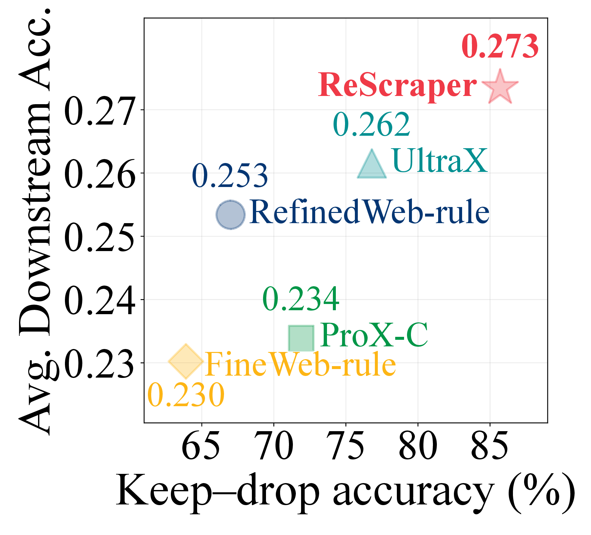
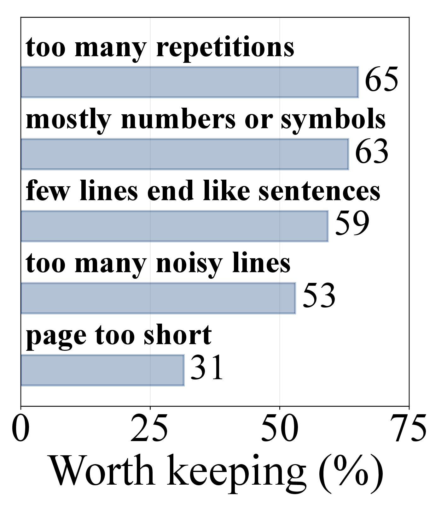
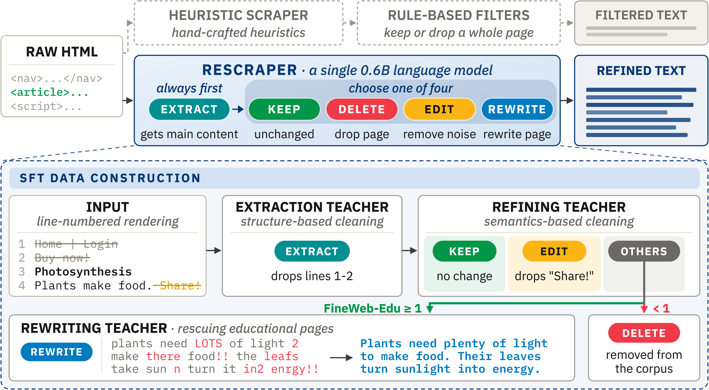
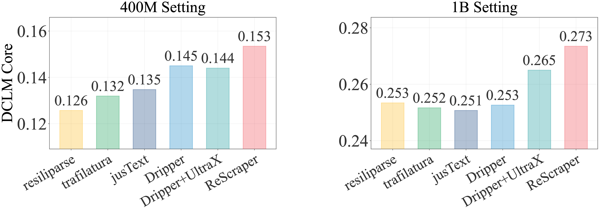
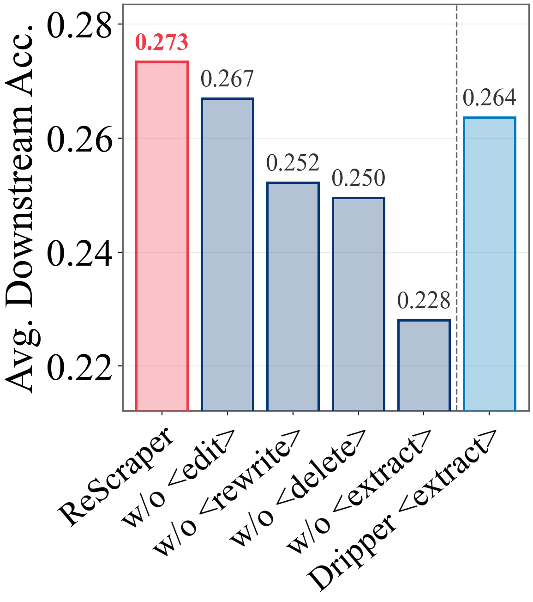
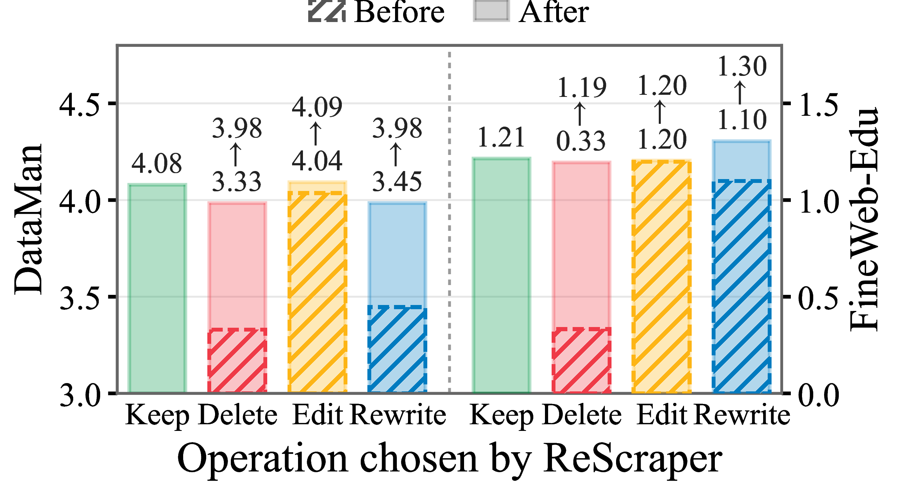
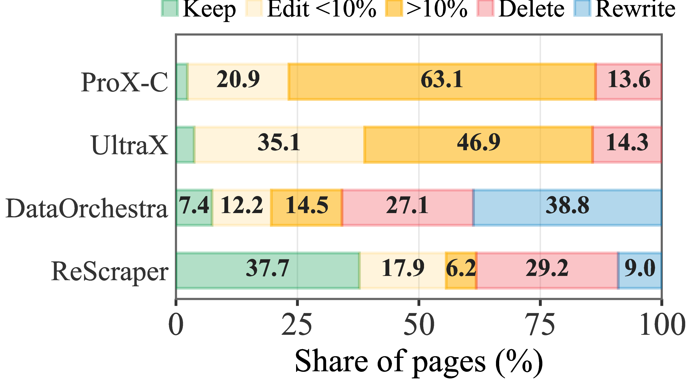
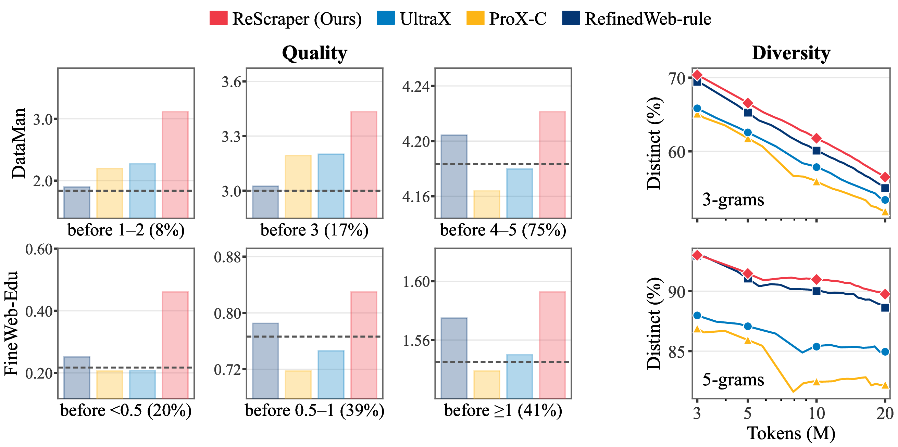

ReScraper: Unified Scraping and Cleaning of Web Data for Effective LLM Pretraining
One 0.6B model in place of a heuristic scraper plus dozens of hand-written filters.
Web text is cleaned by a heuristic scraper plus dozens of rules that mostly keep or drop whole pages. 31–65% of the pages each rule drops are judged worth keeping.
ReScraper reads the full rendered page, extracts the main content, and then keeps, edits, deletes, or rewrites it — one 0.6B model, one pass, no cascade.
Pretraining on its output gives the best DCLM Core score at 400M, 1.4B and 2.8B — +3.8–4.7% relative over the strongest baseline at each scale.
Why
We labelled 5,000 held-out Common Crawl pages with an LLM judge and asked what each filter rule actually removes. Rules are coarse: they act on whole pages, and the pages they drop are often the ones worth keeping. Keep-or-drop accuracy also tracks downstream accuracy, so these mistakes are paid for in pretraining.


Method
Every page is rendered with line identifiers and handed to the model in full. ReScraper always extracts the main content first, then commits to a single decision for the page. Supervision comes from three teachers — an extraction teacher, a refining teacher, and a rewriting teacher that rescues informative pages the cascade would delete.

Results
Same 18.0M-page Common Crawl pool for every method; DCLM Core is the centered accuracy over 22 downstream tasks. All baselines run on resiliparse-scraped text, while ReScraper curates the rendered page directly.
| Cleaning method | #Unique tokens | Core @ 400M | Core @ 1.4B | Core @ 2.8B |
|---|---|---|---|---|
| Raw text | 17.69B | 0.1330 | 0.2254 | 0.2804 |
| C4-rule | 5.06B | 0.1370 | 0.2136 | 0.2409 |
| RefinedWeb-rule | 7.04B | 0.1257 | 0.2534 | 0.3006 |
| FineWeb-rule | 5.16B | 0.1465 | 0.2302 | 0.2790 |
| ProX-C | 11.80B | 0.1429 | 0.2339 | 0.2969 |
| UltraX | 10.78B | 0.1395 | 0.2615 | 0.3064 |
| DataOrchestra (multi-agent) | 13.60B | 0.1461 | 0.2565 | 0.3068 |
| ReScraper (0.6B) | 7.44B | 0.1535 | 0.2735 | 0.3184 |
Pretrained models: 400M / 1.4B / 2.8B parameters on 8.2B / 28.8B / 55.9B tokens. ReScraper also uses about a third of the GPU hours of its extraction teacher alone.





Examples
39 held-out pages, none of them seen in training. The left panel is the rendered page ReScraper reads, with the two rule stacks under it; the right column holds the model-based refiners, ReScraper first. Every baseline starts from the same resiliparse extraction of the page. Rewrite cases were checked for faithfulness: every rewrite shown adds no entity or number that is not on the page.
Release
Code: data construction from the three teachers, two-stage training, pool inference and the executor, plus every baseline and evaluation in the paper.
Model: the 0.6B refiner (Qwen3-0.6B backbone) with both stage prompts.
Data: the 7.44B-token curated corpus, the raw pool output, and both SFT sets.
@article{yu2026rescraper,
title = {ReScraper: Unified Scraping and Cleaning of Web Data for Effective LLM Pretraining},
author = {Yu, Zichun and Yan, Jiarui and Sanghvi, Shlok and Atri, Nihar and Xiong, Chenyan},
journal = {arXiv preprint arXiv:2609.34287},
year = {2026}
}